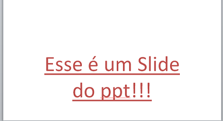
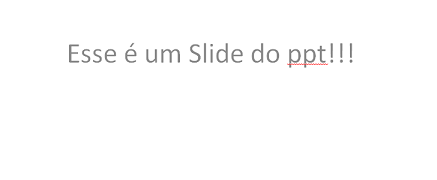

Vamos aprender sobre uma ferramenta do Power Point, mas que é inerente ao Pacote Office. Trata-se do limpador de formatação.
Se você viu o Pincel de Formatação, é algo similar. Vamos a um exemplo.
Você está trabalhando em uma apresentação, e em um slide tem uma frase, por ex:
Percebe-se que a frase está com algum estilo (cor da fonte, sublinhado, tamanho da fonte, etc.)
Mas você quer tirar a formatação. Diferente do Pincel de Formatação, que você move uma formatação de um lugar para o outro, com o , você remove.
Ao selecionar a frase, clicar no ícone, ficará sem nenhuma formatação, padronizado:
